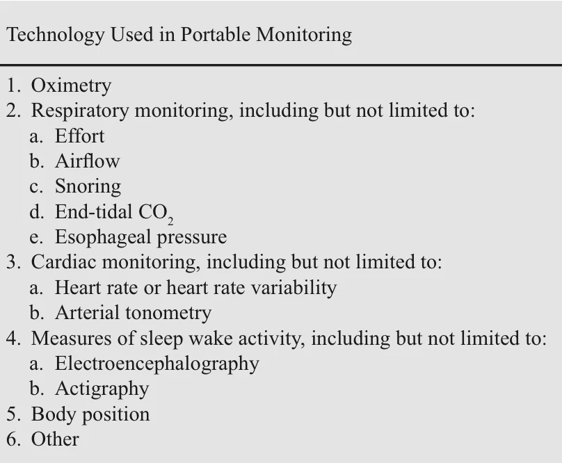

Physician diagnosis and portable testing
Under the 2025 AADSM standards, a qualified dentist may order/administer an HSAT where local law permits, but an authorised medical provider is responsible for diagnosing OSA. A dental screening result or titration signal is not a self-standing diagnosis.
In-laboratory polysomnography
Accurate, with a low failure rate, and attended by technical staff — but expensive and technically complex.
Also the standard for diagnosis in patients with other sleep disorders such as narcolepsy and central sleep apnoea.
Portable monitoring — the clinical guideline in detail
A portable monitor (PM) is an alternative diagnostic test: less expensive and quicker, and it can be as accurate as polysomnography in selected populations. Patients appropriate for a PM must be at high risk for OSA and must not have comorbid medical disorders or comorbid sleep disorders. Failure to meet these criteria in a patient at high risk for moderate-to-severe OSA should lead to in-laboratory polysomnography.
| Element | Guideline content |
|---|---|
| Supervision | Portable monitoring for the diagnosis of OSA should be performed only in conjunction with a comprehensive sleep evaluation, by a board-certified sleep specialist or an individual who fulfils the eligibility criteria for the sleep medicine certification examination |
| Indication | A PM may be used as an alternative to PSG for the diagnosis of OSA in patients with a high pre- test probability of moderate-to-severe OSA. Use should be limited to high-risk populations, and this depends on clinical judgement informed by demographics, predisposing and precipitating factors, clinical features and familial pattern. The relevant risk factors are snoring, sleepiness, obesity and witnessed apnoea, and the severity of the risk factors correlates with the severity of the OSA. There are only limited data for the use of PMs in children and in those over 65 |
| Contraindications | A PM should not be used in patients with comorbidities, in patients with other sleep disorders, or for screening. Significant comorbid medical conditions may degrade PM accuracy — moder-ate-to-severe pulmonary disease, neuromuscular disease, congestive heart failure — so use in- laboratory PSG. Where other sleep disorders are suspected — central sleep apnoea, periodic limb movement disorder, insomnia, parasomnias, circadian rhythm disorders, narcolepsy — a PM does not include the data needed to reach those diagnoses, so use in-laboratory PSG |
| Special indications | A PM may be indicated for the diagnosis of OSA in patients for whom in-laboratory PSG is not possible because of immobility, safety or critical illness. A PM may also be indicated to monitor the response to non-CPAP treatments for OSA — including oral appliances, upper airway surgery and weight loss — where the diagnosis of OSA has already been made |

Figure 9.1 — Technology used in portable monitoring:(1) oximetry; (2) respiratory monitoring — effort, airflow, snoring, end-tidal CO 2, oesophageal pressure; (3) cardiac monitoring — heart rate or heart rate variability, arterial tonometry; (4) measures of sleep–wake
activity — electroencephalography, actigraphy; (5) body position; and (6) other.
Why it is examinable: examiners ask what a portable monitor must record as a minimum. The answer is airflow, respiratory effort and blood oxygenation— and the biosensor types recommended for laboratory PSG are the ones recommended for portable monitors.
Technology requirements — the detail worth learning
| Parameter | Recommended sensor and rationale |
|---|---|
| Minimum recording | A PM must record airflow, respiratory effort and blood oxygenation at a minimum |
| Airflow | Oronasal thermal sensor to detect apnoea, and nasal pressure transducer to detect hy-popnoea — ideally a PM should use both sensor types. The nasal pressure device is superior to a thermistor for detecting flow but is limited to nasal flow, leaving oral flow undetected, giving an unnoticed signal in a mouth breather — which is exactly why the oronasal sensor is also needed |
| Respiratory effort | Ideally either calibrated or uncalibrated inductance plethysmography. Respiratory inductive plethysmography can use changes in chest and abdominal excursion during inspiration and expir-ation to measure actual tidal volume. To improve accuracy, effort should be assessed in conjunction with another event such as oxygen desaturation |
| Blood oxygenation | Pulse oximetry with an appropriate signal averaging time and accommodation for motion artefact: a maximum signal averaging time of ≤3 seconds at a heart rate of 80 bpm or more. Most stud-ies use a finger probe |
| Scoring | The device must allow review of raw data, permitting manual scoring or manual editing of auto-mated scoring by skilled personnel with review of the raw signal |
| Paediatric addition | End-tidal CO2 is a standard PSG measurement in paediatric patients |
Diagnosis in children
Diagnosis primarily involves comprehensive clinical evaluation followed by objective sleep studies, with overnight polysomnography the gold standard. Clinical evaluation begins with a detailed history focusing on habitual snoring, observed apnoeas, laboured or paradoxical breathing during sleep, daytime sleepiness, behavioural problems and learning difficulties, with physical examination attending to upper airway anatomy including tonsil and adenoid size, craniofacial features, and signs of obesity or comorbid conditions. Validated questionnaires aid screening but are not definitive. Attended in-laboratory PSG records EEG, EOG, EMG, ECG, respiratory airflow, respiratory effort, oxygen saturation and body position, allowing correlation of respiratory events with sleep stages and arousals; an obstructive AHI ≥1 event/hour is abnormal. PSG is indicated for children with clinical symptoms of SDB, especially before adenotonsillectomy in patients under 2 years, in obesity, in craniofacial or neuromuscular disorders, in Down syndrome, or where symptoms persist after surgery — and for CPAP titration and complex cases. Other tools: respiratory polygraphy (no sleep staging, less validated in children); nocturnal oximetry (a simple screening tool with good predictive value in high-risk children); home sleep apnoea testing (emerging, not recommended as a standalone diagnostic tool in paediatrics); daytime nap studies (less accurate); radiological imaging and biomarkers (promising, requiring further research).
Diagnosis in adults
Physicians first assess symptoms — habitual loud snoring, witnessed apnoeas, choking or gasping during sleep, excessive sleepiness, fatigue, cognitive impairment and mood disorder — and note risk factors on examination: obesity with high BMI, large neck circumference, hypertension, cardiovascular disease. Screening questionnaires such as the ESS support clinical suspicion but cannot diagnose SDB alone. Overnight polysomnography quantifies apnoeas and hypopnoeas per hour of sleep as the AHI; an AHI ≥5/h with symptoms, or ≥15/h regardless of symptoms, confirms OSA. PSG is also essential for assessing severity and distinguishing central from obstructive events. Home sleep apnoea testing may be used to diagnose moderate-to-severe OSA in patients with high pre-test probability and without significant comorbidity, monitoring fewer channels — airflow, respiratory effort, oxygen saturation, heart rate — but PSG remains preferred where the diagnosis is uncertain or other sleep disorders are suspected. Additional testing includes the MSLT where narcolepsy or hypersomnia is suspected, with acoustic pharyngometry and actigraphy as adjuncts, and referral to ENT, cardiology or neurology as findings dictate.
Clinical suspicion, based on symptoms and risk factors, initiates the diagnostic process.
Overnight laboratory polysomnography is the definitive diagnostic tool, measuring multiple physiological parameters during sleep.
Home sleep testing may be suitable for straightforward moderate-to-severe cases.
Diagnosis relies on the AHI threshold combined with the clinical presentation.
Complementary testing and specialist referral support diagnosis and management.
From the supplied IFDSM Examination Revision Companion, source pp. 129–131. This full content is embedded in the HTML page, not loaded from a PDF or external script.